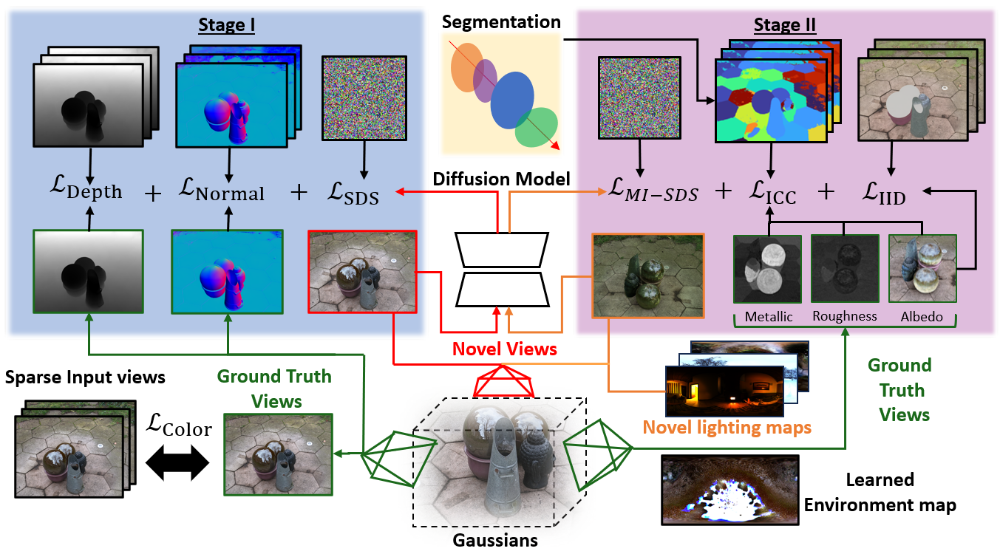
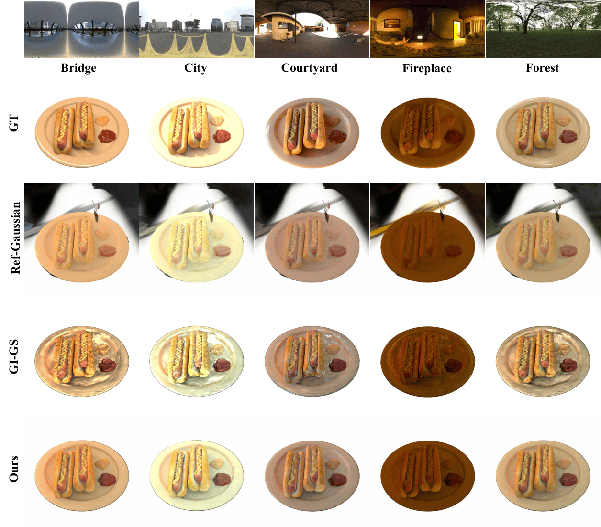
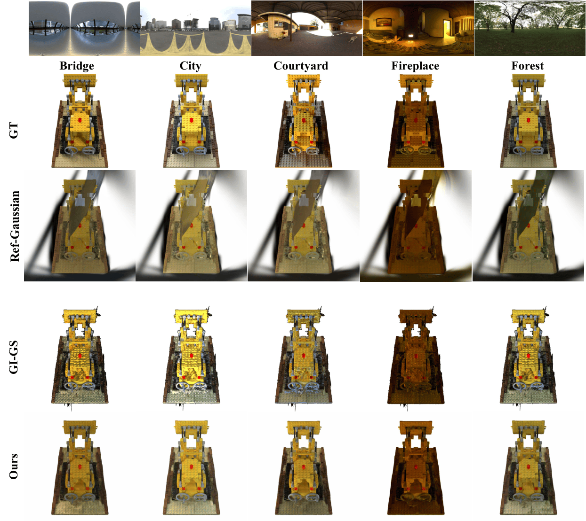
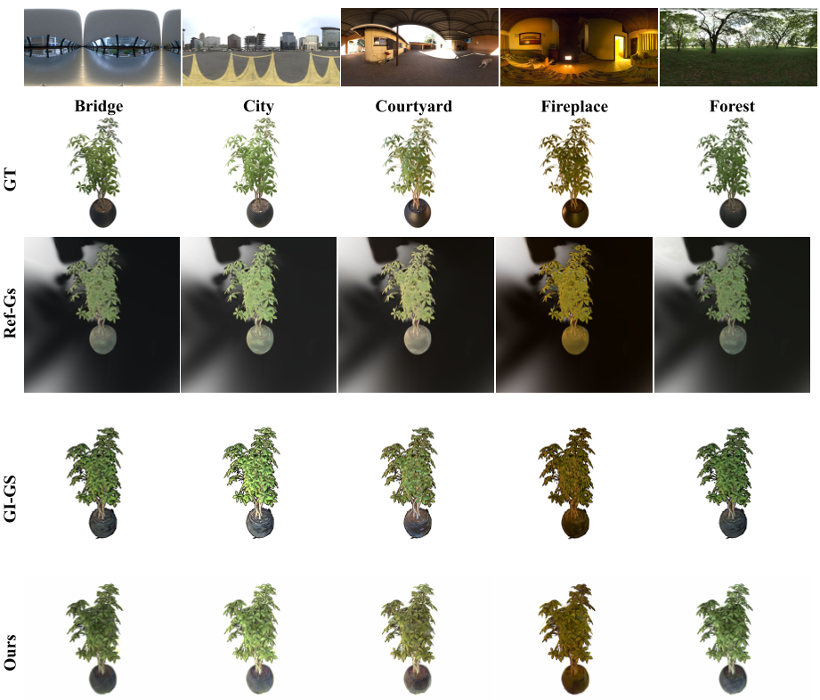
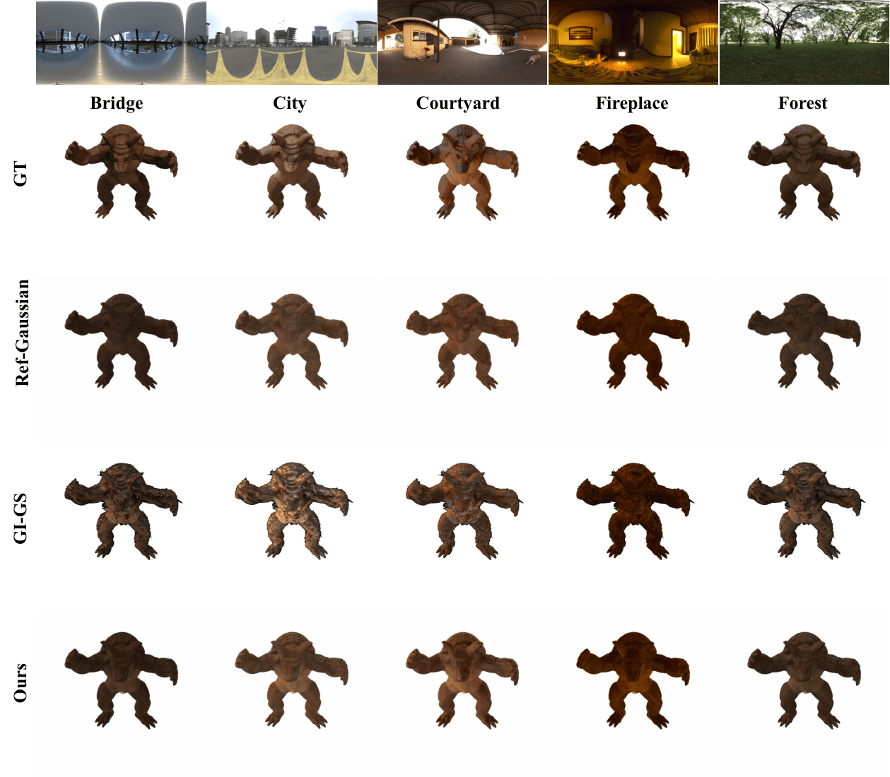
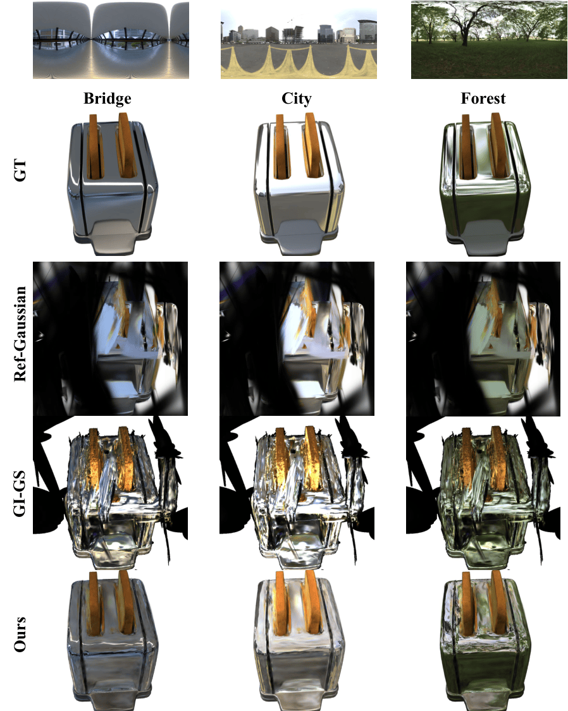
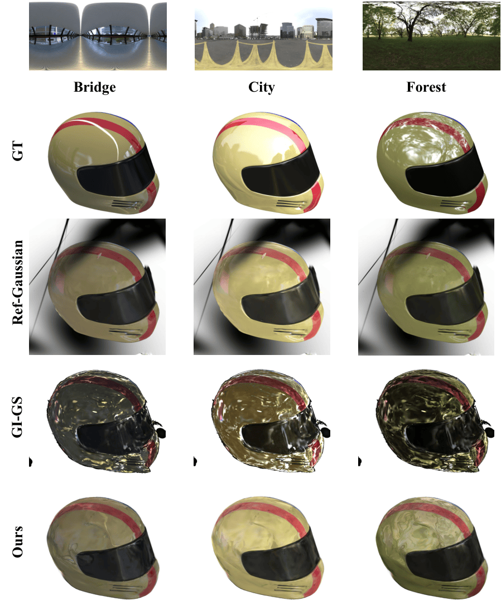
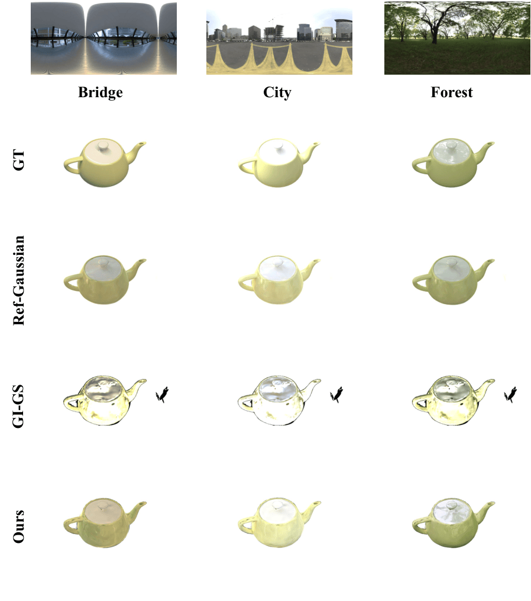
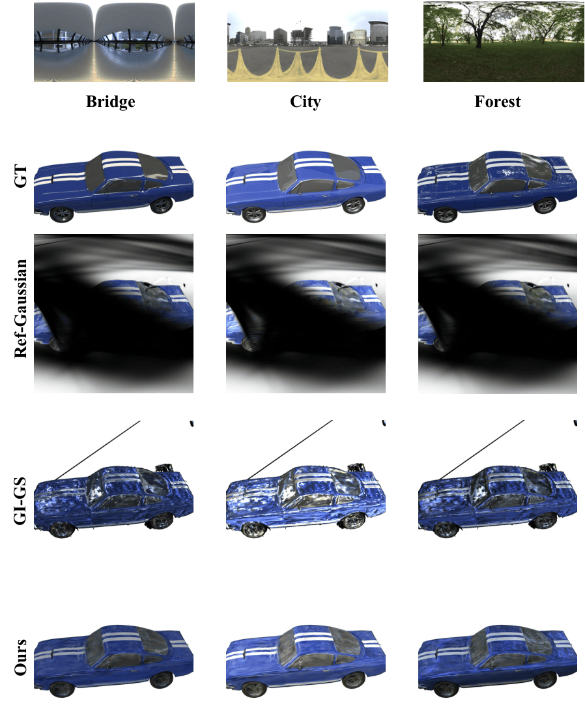
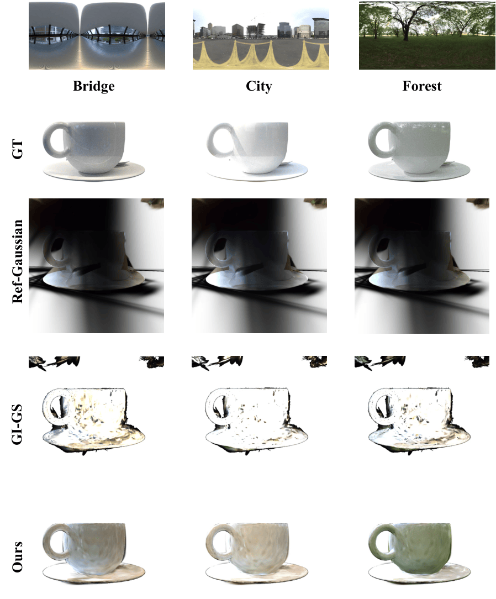

Recent advances in Gaussian Splatting-based inverse rendering extend Gaussian primitives with shading parameters and physically grounded light transport, enabling high-quality material recovery from dense multi-view captures. However, the accuracy of these methods degrades under sparse-view settings, where limited observations lead to severe ambiguity between geometry, reflectance, and lighting. We introduce GAINS (Gaussian-based Inverse rendering from Sparse multi-view captures), a two-stage inverse rendering framework that leverages foundation models as priors to stabilize geometry and material estimation. The core technical contribution of this paper is an inverse rendering framework that unifies foundation model priors with physically-based representations in an optimization scheme. GAINS first refines geometry using monocular depth, normal, and diffusion priors, and then employs segmentation, intrinsic image decomposition (IID), and diffusion priors to regularize material recovery. Extensive experiments on synthetic and real-world datasets show that GAINS significantly improves material parameter accuracy, relighting quality, and novel-view synthesis compared to state-of-the-art Gaussian-based inverse rendering methods. While GAINS outperforms and remains competitive across a wide range of objects captured with 4 to 32 cameras, the improvement is particularly pronounced under sparse-view settings, where ambiguity is high and learning-based priors become especially beneficial.

tensorIR (8 views)









@misc{noras2025gainsgaussianbasedinverserendering,
title={GAINS: Gaussian-based Inverse Rendering from Sparse Multi-View Captures},
author={Patrick Noras and Jun Myeong Choi and Didier Stricker and Pieter Peers and Roni Sengupta},
year={2025},
eprint={2512.09925},
archivePrefix={arXiv},
primaryClass={cs.CV},
url={https://arxiv.org/abs/2512.09925},
}